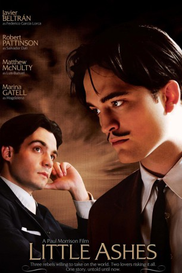
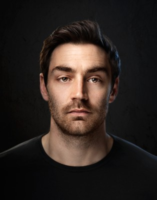
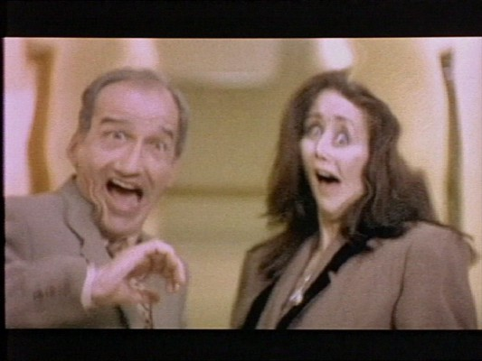

#4357 Little Ashes
 
 IMDB-Wertung: 6.6 / 10
IMDB-Wertung: 6.6 / 10  Metascore: 0
Metascore: 0 
1922 schreibt sich der junge Salvador Dalí (Robert Pattinson) an der Universität von Madrid ein, mit dem festen Wunsch, ein anerkannter Künstler zu werden. Hier lernt er Federico García Lorca (Javier Beltran) kennen, nach einiger Zeit werden die beiden ein Paar. Dies ist nicht einfach, denn eine homosexuelle Beziehung wird zu dieser Zeit nicht anerkannt. Während Lorca mit seiner Sexualität keine Probleme hat, kommt Dalí nicht damit zurecht. Er begibt sich nach Paris, verkehrt dort in rechtskonservativen Kreisen und lässt sich mit der verheirateten Gala (Arly Jover) ein. Unterdessen engagiert sich Lorca für die Arbeiterklasse und gerät in große Gefahr...
Jahr: 2008
Dauer: 112 Minuten
FSK:
Land: England Studio: Blue Sky MediaTonspuren: DTS - ,
Untertitel:
Auflösung: 1080p (1920x1080) Größe: 6737 MB
Genre: Biographie, Drama, Liebe
Regisseur: Paul Morrison
Drehbuch: Rob Perez
Soundtrack:
Darsteller:
- Javier Beltrán als Federico García Lorca
 Robert Pattinson als Salvador Dalí
Robert Pattinson als Salvador Dalí-  Matthew McNulty als Luis Buñuel
- Marina Gatell als Magdalena
- Esther Nubiola als Adela
 Arly Jover als Gala
Arly Jover als Gala-  Simón Andreu als Fernando de Valle
- Vicky Peña als Tía de Magdalena
- Diana Gómez als Ana María
- Pep Sais als Profesor de Arte
- Ferran Audí als Guardia 1
- Christian Rodrigo als Joven Periodista
- Sue Flack als Señora
- Bruno Oro als Paco
- Marc Pujol als Carlos
- Rubén Arroyo als Rafael
- Joan Picó als Joven Oficial
- Adria Allue als Guardia 2
- Ferran Lahoz als Señor Milagro
- Adrian Devant als Titiritero
- Ramon Enrich als Profesor
- Xavi Siles als Hombre 1
- Philippa Goslett als Federico's Sioster
- Hannah Rútzou als Federico's Sister
Datei: X:\2008(G-M)\Little Ashes (2008, FSK, 1920x1080).mkv seit 12.09.2016
Festplatte: HD 2008(G-Z)-2009(A-F)
 Es gibt insgesamt 73 Filme in der Gruppe '2008(G-M)'
Es gibt insgesamt 73 Filme in der Gruppe '2008(G-M)'